LoTR Sites Near Queenstown
Wanaka
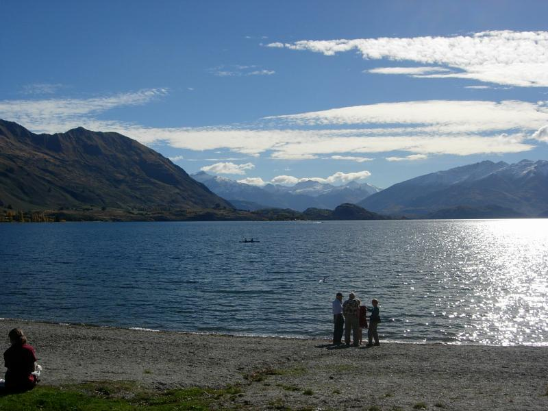
This public park in Wanaka (an hour north of Queenstown) was used as the backgroup for Gandalf's flight from Isengard. You may remember him winging off toward the mountains on Gwaihir.
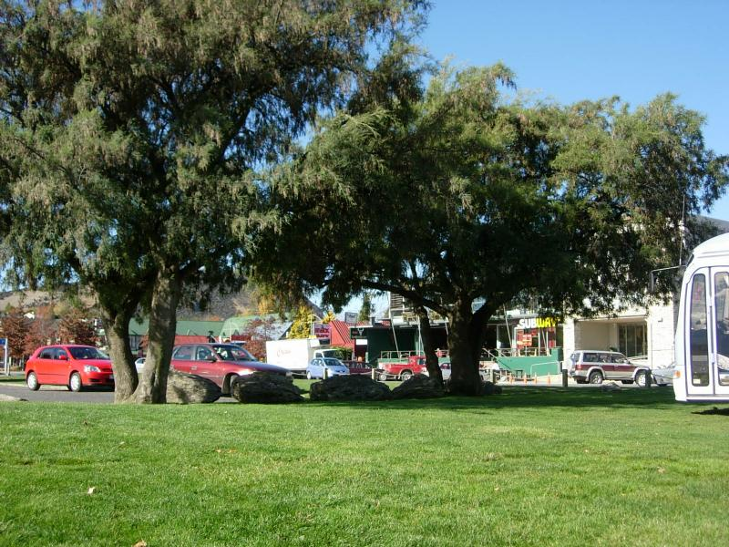
Turn around 180 degrees and--Wanaka.
Queenstown
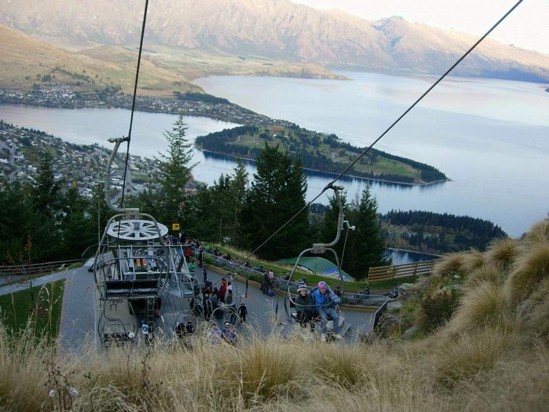
The Remarkables, bordering Queenstown's lake. They're called that because they're one of the few ranges that runs East-West. The hills were pasted in as background for Helm's Deep. The refugees from Rohan trudged along the base of the hills by the lake.
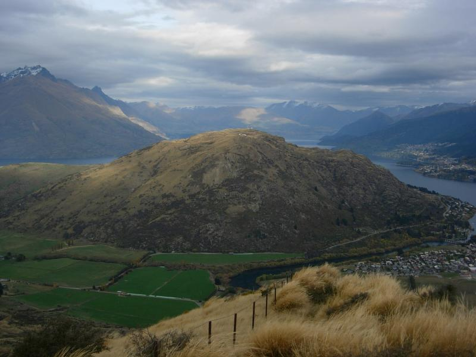
This hill was the site of the warg attack. Aragorn was thrown over the cliff at center right, but since Queenstown was below, another, the party looked over a different cliff (see below).
Kawaru River
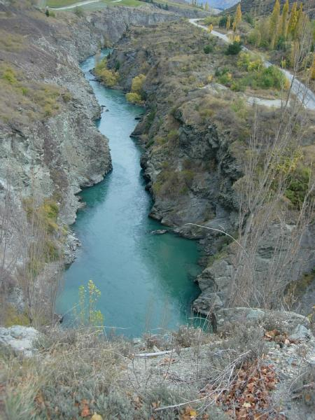
Argonath. The statues of the kings eroded over the last 7,000 years. This is much smaller than it looks in the movie. At the top left you can see an edge of grass. That's the start of a vineyard, it's a winery. The right bank is the cliff that the party looked down from after Aragorn's fall.
The "making of" DVD shows how they added a green tinge to the Prancing Pony interior to make everyone but the Hobbits look threatening. The amazing thing here is that WETA didn't tamper with the color of the water for the Anduin. It really is that color, thanks to silicates acquired while running through mountains.
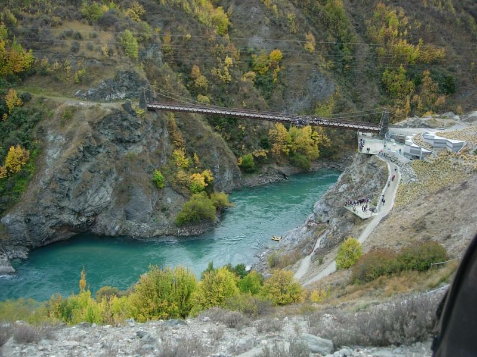
Just beyond Argonath is the world's first (and currently tallest) bungee site. I put more pics and movies of this on the Queenstown page. When the boat passed under the bridge, its shadow traveled across Aragorn. WETA removed it digitally.
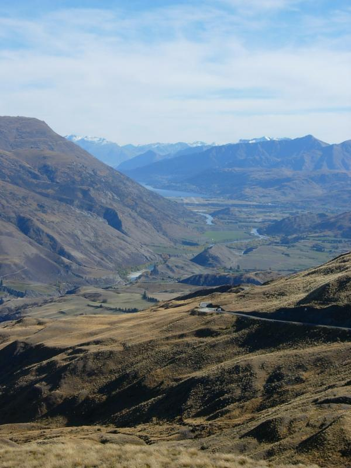
Here's a three-fer. The mountains on the left were spliced in as background for Helm's Deep. The river in the foreground is where the Ford of Bruinen was shot (see below). The mountain in deep background was used for shooting Amon Hen.
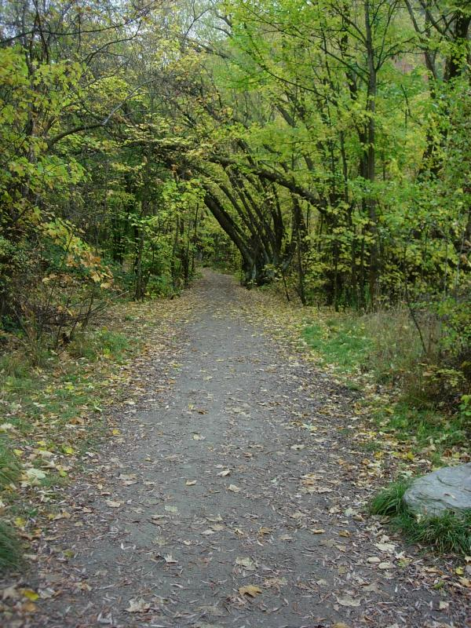
Arrowtown, a gold rush town just northwest of Queenstown. Elendil rode down this path, ring in hand, before being ambushed by orcs.
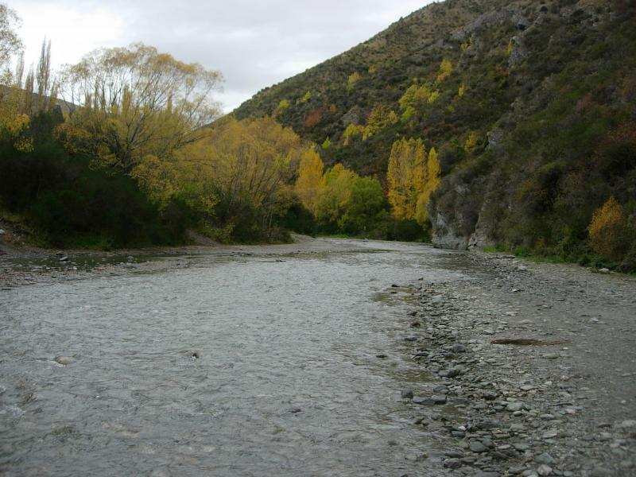
The path leads to one element of the Ford of Bruinen. The scene with the horse waves was filmed in Skipper's Canyon. The tour didn't make it that far out. PJ didn't use WETA for the waves, he used a small company with experience in animating water. The river was too deep for horses to cross, so scenes of horses in the water were shot here.
The Nazgul at the river were actually farmer's wives PJ rounded up. He tried farmers first, figuring they could ride, but it was spring and they were all deep in planting. It was a cold misty morning, and steam kept emerging from the Nazgul's mouths. PJ didn't want that, so he gave them snorkels. I'm told if you look carefully you can see one in the movie.
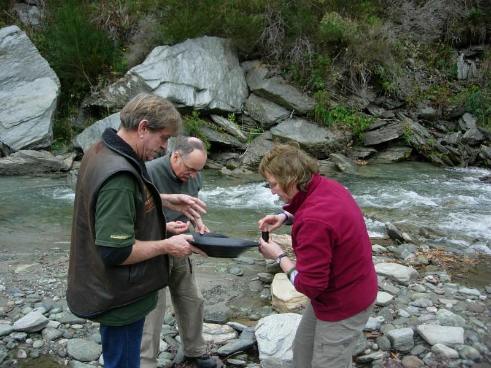
Gold panning at Bruinen. He gave us an unexpected history of driving on the right vs. left side of the road beginning with the Romans (left) to Napoleon (who switched it) and to the US (who adopted it during the Revolution out of solidarity with the French.) It was so concise and organized that I had to ask. He's a professor of library science in England. She's a teacher also, of retarded students.
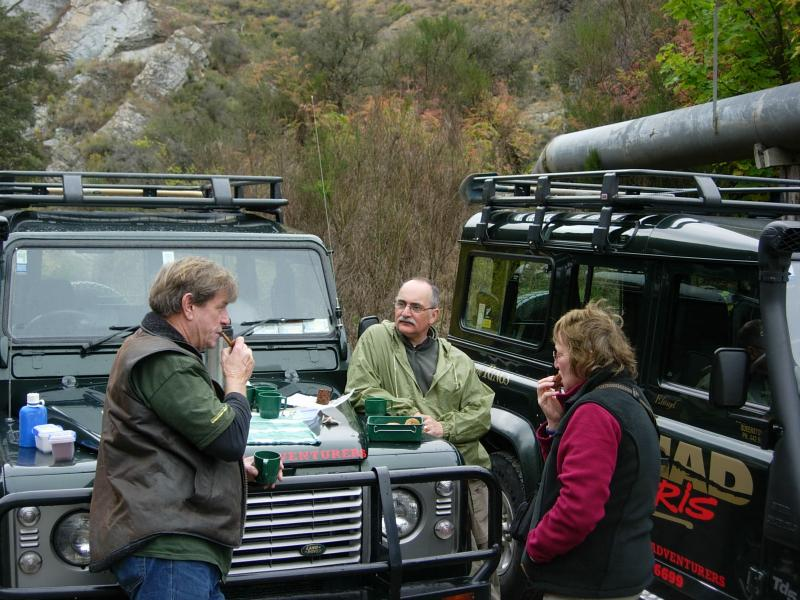
Tea by the ford. Morning and afternoon tea are essential. Even on a meditation retreat with the Sydney group after the trip, teas were served in the Sisters of the Sacred Heart convent we were occupying.
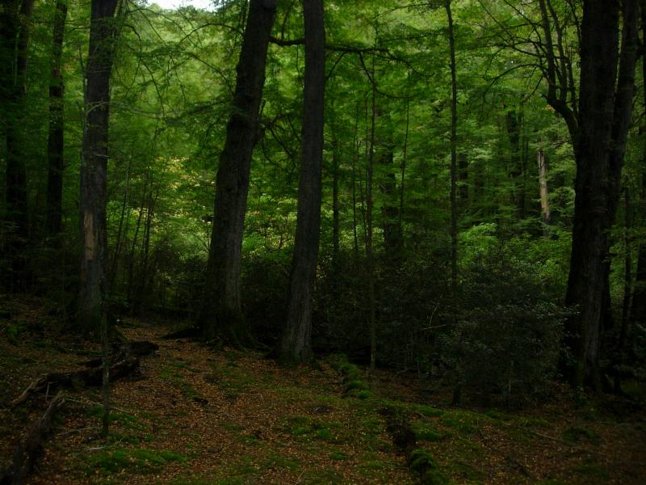
The woods of Lothlorien were shot a little ways down the road to Milford Sound. It's almost always drizzling here.
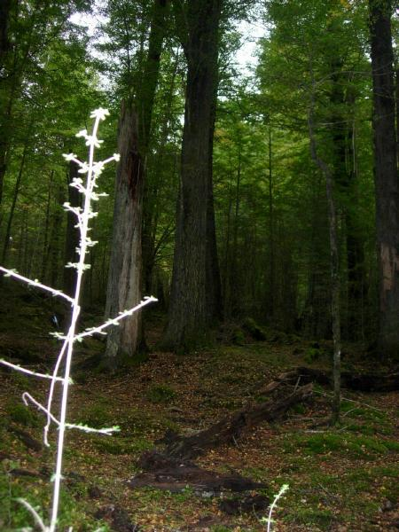
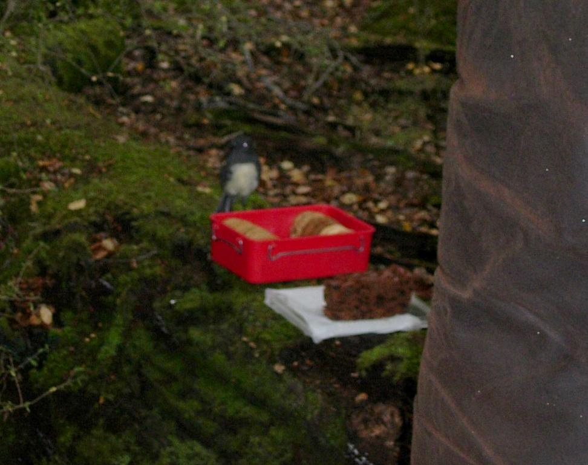
Tea, of course. The teabird kept horning in.
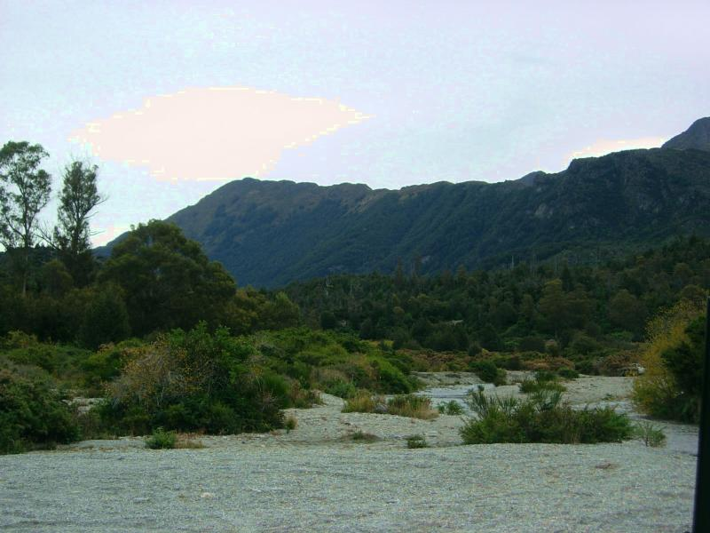
Twelve Mile Delta. Ithilien was shot here. PJ picked it out because it looked semi-damaged, as befits something near Mordor. The look comes from runaway logging in the early 1900s. I guess that counts as orc damage.
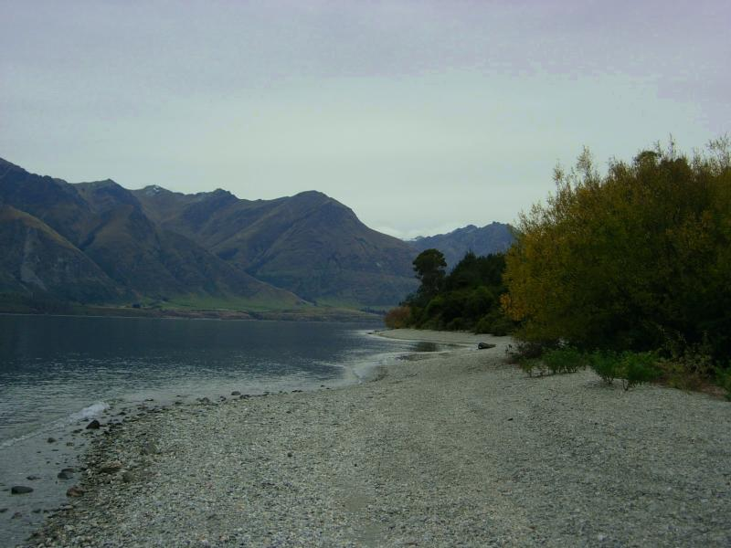
The river along the delta. We couldn't get to the exact site courtesy of DOC which started forbidding 4WD vehicles from driving up the streambed to protect trout spawning. Even during non-spawning season, to the tour guide's disgust. The river is from the lake along which Queenstown is built. They cheat by driving up the lake to get us this far, but after this it's unarguably river.
Butcher's Bill
It's striking how many injuries there were during filming. There were several orc concussions. In addition, the major characters took at least the following hits:
Sean Austin - large piece of glass through foot stepping in river, had to be medevac'd. When confronted with a real problem, he took it like a trooper, and PJ was greatful for his stoicism and professionalism.
Peter Jackson - hit in stomach with rock. On the ninth take of Merry throwing the rock in the water monster pond, he got frustrated and threw it full strength at PJ. Got a good asschewing.
John Rhys-Davies - lost tip of little finger. His standin in the boats on the Anduin was a short Philipino guy, since Rhys-Davies doesn't like boats. He was helping the guy get out of the boat near the bungee bridge when two boats collided and crushed his little finger.
Orlando Bloom - Broke two ribs doing the famous Gimli mount-the-horse move. It was later CGId in.
Viggo Mortensen - famously broke his toe kicking the helmet at the orc pyre. PJ thought his cry of pain was so authentic he used the take.